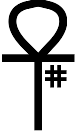

ankh - Ankh - API
 Welcome to Ankh, Andreas Kupries' Hashes.
This document is the reference manpage for the publicly visible API, i.e. the API a user will see, and use.
This command returns a string containing the version number of the Ankh package.
This command returns a list containing the names of all the hashes supported by the Ankh package. The names are returned in dictionary order.
Each supported hash provides an ensemble command with three methods for hashing data from an in-memory string, an open channel, or a file specified by its path in the filesystem.
The set of supported hashes is described in the following section.
These three commands return the HASH-specific digest of the data specified by the command arguments.
Attention: Note that this result is binary data, i.e. a Tcl ByteArray value. It is the callers responsibility to encode this digest into any other required form, like hex-digits, or base64, etc.
The data to hash is provided either by a channel opened for reading, the path to a file in the filesystem, or an in-memory string (Again a Tcl ByteArray value).
This command returns the size of digests generated by the HASH, in bytes.
This command returns a list of informational data about the HASH.
The package currently supports 18 different hash functions, some configured for multiple digest sizes, for a total of 30 commands.
Note that many of the hash functions have descriptions at RHash @ SourceForge. Because of that the descriptions here are even shorter summaries.
Further note that all phrases like X supports digests of size A, B, ... should be read to mean that this are the digest sizes supported by the C code underlying Ankh. While this matches the allowed/specified digest sizes for many of the hashes here, it is not true for all.
The Advanced Intelligent Corruption Handler comes from the EDonkey p2p-network. It uses SHA-1 internally. Digests are 160 bits.
See also ed2k below.
See Blake 2 @ Wikipedia for details. Supports digests of 256 and 512 bits.
The BitTorrent InfoHash originates, naturally, in the BitTorrent network. Digests are 160 bits.
Like aich above EDonkey 2000 comes from the EDonkey p2p-network. It uses MD-4 internally. Digests are 128 bits.
Defined in 2006 in the article D. Gligoroski, S. Markovski, L. Kocarev "Edon-R, An Infinite Family of Cryptographic Hash Functions". Supports digests of 224, 256, 384, and 512 bits.
These hash functions are from the Russian national standard GOST R 34.11-94. gost12 supports digests of 256 and 512 bits. gost94 digests are 256 bits.
Designed in and by Korea, for the Korean Certificate-based Digital Signature Algorithm (KCDSA). Digests have 160 bits.
Message digest 4 was developed by Ronald L. Rivest. See RFC 1320. Digests have 128 bits.
Message digest 5 is an improved success of MD-4, also developed by Ronald L. Rivest. See RFC 1321. Digests have 128 bits.
The RACE Integrity Primitives Evaluation Message Digest. Digests have 160 bits.
The Secure Hash Algorithm 1 was designed in 1993. See RFC 3174. Digests are 160 bits.
Secure Hash Algorithm 2 is the successor of SHA-2. Supports digests of 224, 256, 384, and 512 bits.
Secure Hash Algorithm 3 is the latest in the SHA series. Based on a completely new internal construction than the predecessors. See KECCACK. Supports digests of 224, 256, 384, and 512 bits.
Made by Ralph Merkle in 1990. Considered broken. Also slow. Supports digests of 128 and 256 bits.
Tiger was developed by Ross Anderson and Eli Biham, with speed on 64bit processors in mind. Digests are 192 bits.
The Tiger Tree Hash is based on the Tiger hash above. It is used by the p2p networks Direct Connect and Gnutella. Digests are 512 bits.
Comes from NESSIE. Adopted by ISO/IEC 10118-3:2004. Digests are 512 bits.
This document, and the package it describes, will undoubtedly contain bugs and other problems. Please report such at the Ankh Tracker. Please also report any ideas for enhancements you may have for either package and/or documentation.
aich, bittorrent info hash, blake, btih, cryptographically secure hashes, ed2k, edonr, gost12, gost94, has160, hash digests, md4, md5, ripemd160, secure hashes, sha1, sha2, sha3, snefru, tiger, tth, whirlpool
cryptographically secure hashes
Copyright © 2021 Andreas Kupries
Copyright © 2021 Documentation, Andreas Kupries